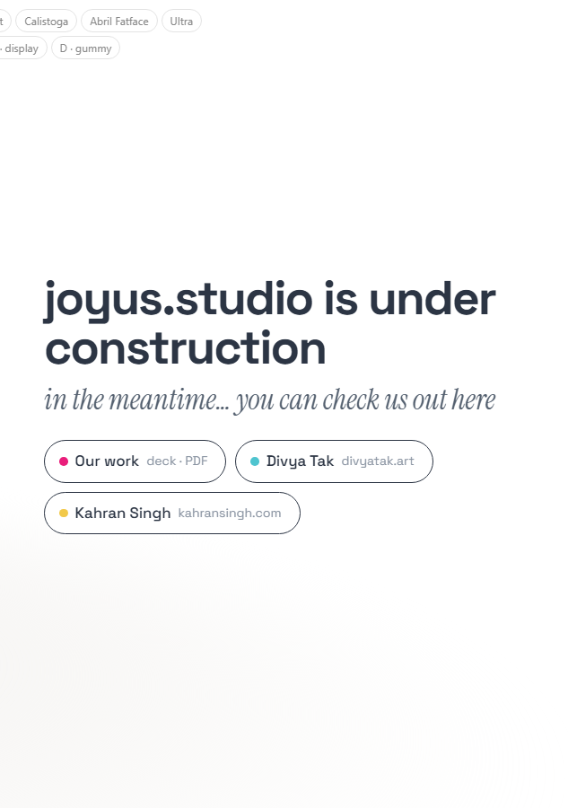
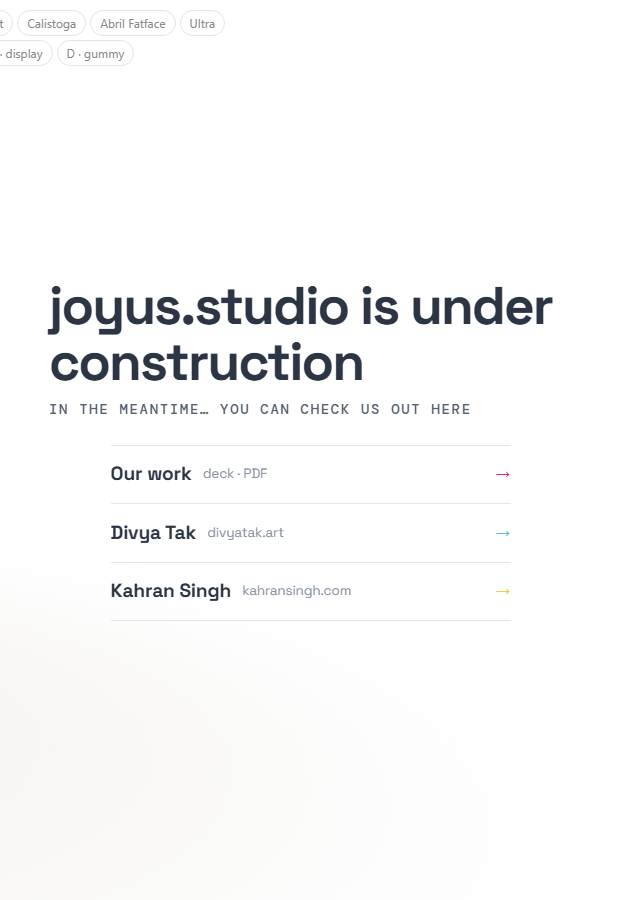
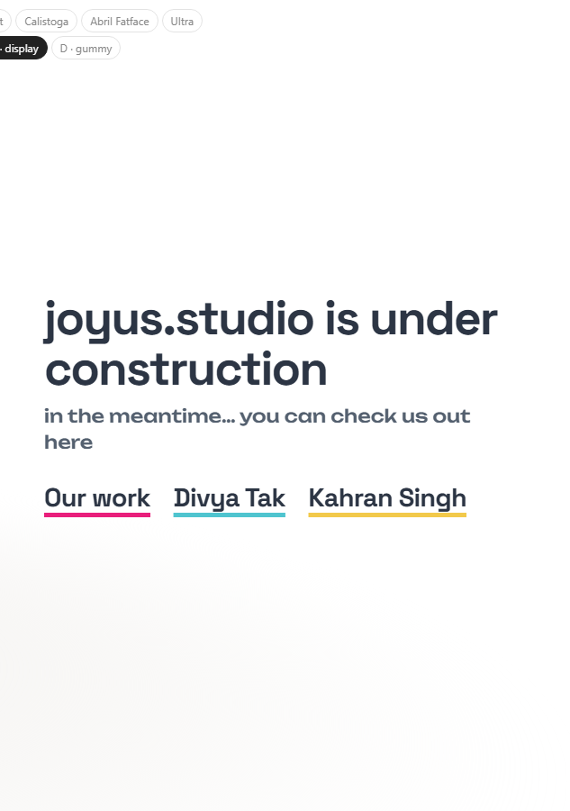
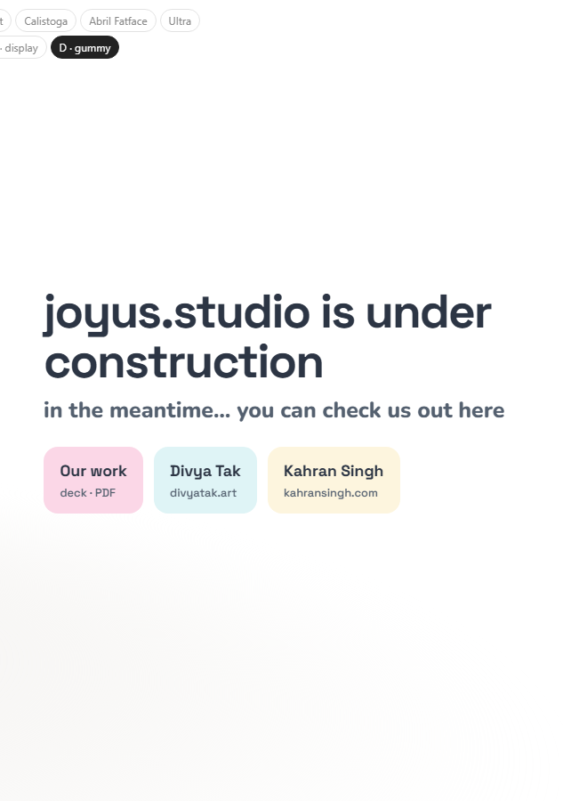

Study 31 · 13 October 2026
The words
The headline bigger. The second line now says "in the meantime… you can check us out here". The links four ways; each is one idea: the line's voice and the links' shape.
Open the page (A–D at the top)



On a phone
Open
- Which treatment (or which line with which links).
- "in the meantime…": the ellipsis, or three dots, or none.
Headline: up to 3.8rem (was 2.6rem). Fonts for the line: Instrument Serif italic, DM Mono, Unbounded, Nunito. Test: page-test.mjs, 47 checks in a browser; read by check.cjs.